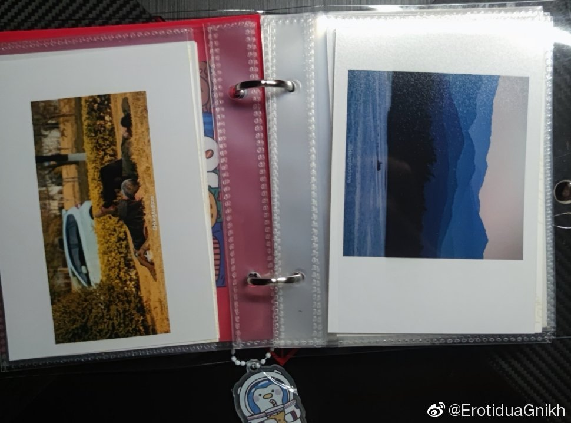
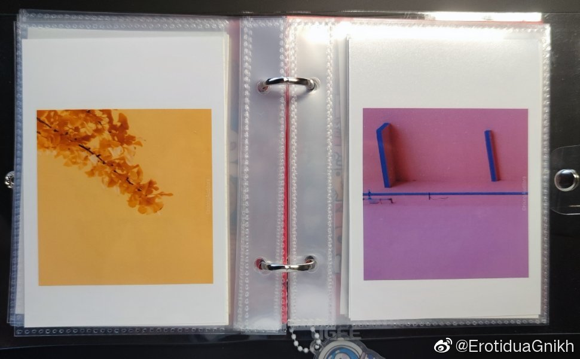
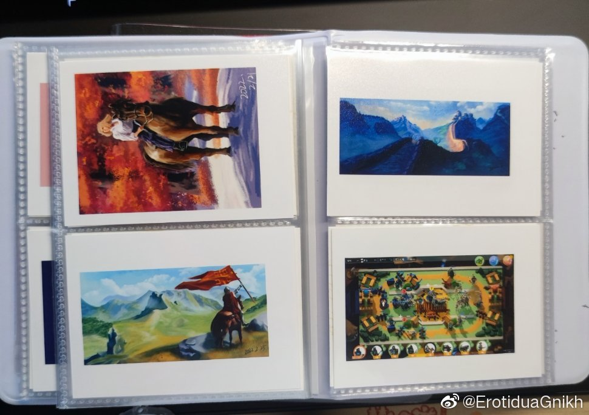

晚安
今晚去跑步，回来的时候突发奇想去操场看了看，
以前从来没有在晚上去过操场，我也没想到居然会有这么热闹。
男男女女围各自坐在一圈，唱歌、打牌、吃零食、聊天——可没有人玩手机。
好像这才是我想象里大学的模样啊。突然有点失落，感觉像我大学快要结束的时候才找到我期待了四年的东西。可惜我不能加入他们中的任何一支队伍。
说起来我也做过不只一次梦是在操场的草坪上唱国际歌
今晚好多人在怀念2019，自己也被这种情绪感染。 我问了下自己，是不是只是在怀念过去，倒也不必非得是2019——但我想来想去，尽管疫情之前还有2018/2017/2016....但我怀念的程度确实都比不上2019。
我问了下自己，是不是只是在怀念过去，倒也不必非得是2019——但我想来想去，尽管疫情之前还有2018/2017/2016....但我怀念的程度确实都比不上2019。
比如第一次实习，比如天国的菜鸟厨房，比如糖果灾难，还有一些我现在想起来都觉得美妙得不可思议的人和事。
回忆美妙的过去倒不会让人惆怅，惆怅的是这些美妙的回忆现在已经不可能再次上演了。
不可思议，以至于会让人怀疑：2019那些美妙的过往是真实存在过的吗，还是只是疫情之后我们安慰自己所制造的幻想罢了。
今晚去跑步，回来的时候突发奇想去操场看了看，
以前从来没有在晚上去过操场，我也没想到居然会有这么热闹。
男男女女围各自坐在一圈，唱歌、打牌、吃零食、聊天——可没有人玩手机。
好像这才是我想象里大学的模样啊。突然有点失落，感觉像我大学快要结束的时候才找到我期待了四年的东西。可惜我不能加入他们中的任何一支队伍。
说起来我也做过不只一次梦是在操场的草坪上唱国际歌
今晚好多人在怀念2019，自己也被这种情绪感染。
比如第一次实习，比如天国的菜鸟厨房，比如糖果灾难，还有一些我现在想起来都觉得美妙得不可思议的人和事。
回忆美妙的过去倒不会让人惆怅，惆怅的是这些美妙的回忆现在已经不可能再次上演了。
不可思议，以至于会让人怀疑：2019那些美妙的过往是真实存在过的吗，还是只是疫情之后我们安慰自己所制造的幻想罢了。
- 
- 
- 